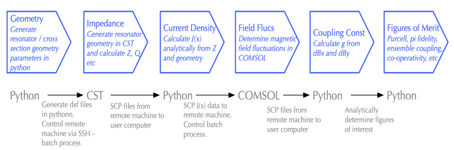

Overview¶
When using coplanar waveguide resonators for quantum spin dynamics, there is often a need to analytically/numerically determine specific figures of merit particular to the resonator design. The aim here is that we can assess how the design will behave for a given spin system and desired experiment. The workflow for performing these calculations is typically quite laborious however, and often involves using multiple software packages and handling great amounts of output data. It is desirable then to automate this process, such that a user specifies only very simple parameters, but receives the full range of numerical outputs.
This documentation details a package which achieves just that. Specifically, a user will input very simple geometric parameters for their CPW, such as conductor width and length, the gap between the conductor and ground, the conductor thickness, and the substrate dimensions. The impedance of this structure is then determined by runnning CST Microwave Studio from the command line via the ssh protocol. The data from cst is loaded into a preprocessing python script, where the vacuum current fluctations for the cpw are determined analytically.
This current density J(x) is then passed as a csv file to a remote machine, along with the geometric parameters of the resonator, via ssh. A pre-generated COMSOL script is updated with the new parameters, and then run via the command line remotely. Magnetic field data generated by COMSOL is autonomously transferred back to the user computer, where post-processing of the data can commence.
This workflow is summarized in the below figure
{kind=link}
Package Overview¶
This is a multi-layered software package, which contains three library hierarchies:
- electromagnetics
- ssh_command
- data_processing